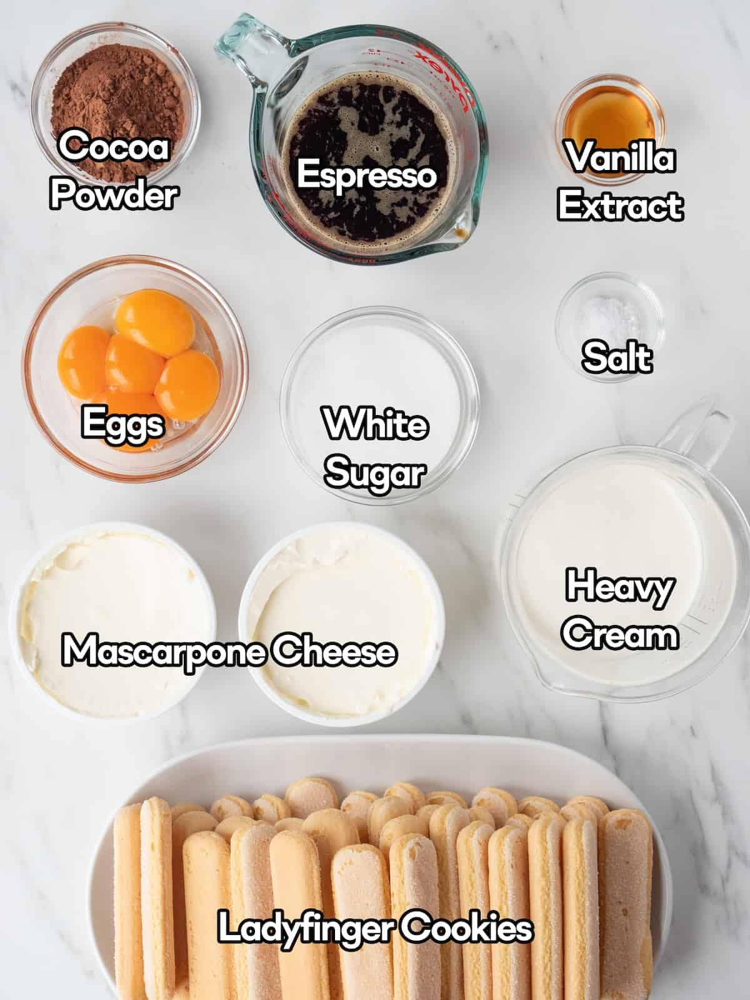

A classic Italian dessert made with layers of coffee-soaked ladyfingers, rich mascarpone cream, and a dusting of cocoa powder. Perfect for any occasion!
🤎 Ingredients required: 🤎
1 cup strong brewed coffee, cooled
3 tablespoons sugar
3 large eggs, separated
8 ounces mascarpone cheese
1 teaspoon vanilla extract
24 ladyfinger biscuits or replace with 48 Marie biscuits as a substitute.
2 tablespoons cocoa powder
1 tablespoon coffee liqueur (optional, for extra flavor)
Dark chocolate shavings for garnish (optional)

🤎 Instructions to be followed: 🤎
Whisk the egg yolks with sugar until pale and creamy.
Add mascarpone cheese and vanilla extract, mixing until smooth.
In a separate bowl, beat egg whites until stiff peaks form.
Gently fold the egg whites into the mascarpone mixture.
Mix the brewed coffee with the coffee liqueur (if using).
Dip ladyfingers into the coffee mixture and arrange them in a serving dish.
Spread half of the mascarpone mixture over the ladyfingers.
Repeat the layers with more coffee-soaked ladyfingers and mascarpone cream.
Dust the top generously with cocoa powder.
Chill in the refrigerator for at least 4 hours before serving.
Garnish with dark chocolate shavings before serving (optional).
🎥 Watch the Tiramisu Video Tutorial:
🍴 Pro Tips:
For a richer flavor, let the tiramisu rest overnight.